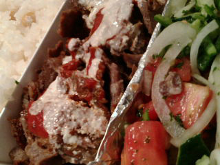
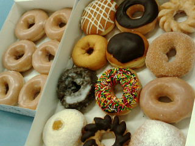
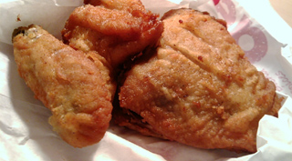
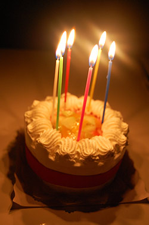
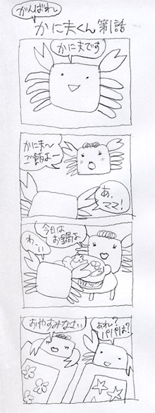

かに風味ブログ
-
れんきゅうのわたくし
なんか結局1ヶ月のロングラン出張。 先週末からの三連休は、仕事に動きが無かったので実家にー。 トーキョーは五輪誘致でがんばってる。 またオリンピック来るといーね。 しばらくぶりに東京をあちこち移動す…

-
のろのろわれ
実家のFAXが呪われていた。

-
美術館めぐりとマメ
実家からバスに乗って。三連休初日で混雑している都内を走る。 こっちのバスはちょっと遅れているだけでも、丁寧に理由を伝えて謝罪。 都市圏は時間の隙間ってぜんぜん無い。 常に電車が来て、バスが来て、隙間と…

-
実家まで
池袋西武のワイン売り場。 へー…品揃えはやっぱりいいね。と横目でちらりと見て、写真とって、自分はコノスル買って実家に。 しばらくシンプルな時刻表生活を送っていたせーか、 「特急、快速、準急、通勤快…

-
はなまるのひる
ひさしぶりにしこしこのうどん。 はなまるうどん。しょうゆ。

-
今日も
ケバブです今日はケバブプレート。ヒヨコ豆のピラウ付き。 んまーいです。 赤ワインと一緒にご馳走様。 わたくしは「美味しい！」と思ったものは連続して食べても全然ヘーキなのでした。 たぶん。１週間ケバブ…

-
そう！それは！
会社イチの気配り男子が打ち合わせ帰りに買ってきてくれたCCドーナツ。 オリジナル・グレーズドが「んま！」 8秒チンして食べると、ずきゅーん「死んだ！」…と、美味すぎてヤられたゴッコを会社のコとする。…

-
ぽにょ
まだちょこっと余裕があるので、「崖の上のポニョ」のレイトショー見てきましたー。 レビューを見るとあんまり評判良くないのと、やたら「怖い」「気味悪い」…という話がでてくるので、どきどきしながら見たけど、…

-
食べたくナルナル
またまた出張で関東に来ております。 なんだかむしょうにケンタッキーのフライドチキンが食べたくて、購入。 みなさまはどこの部位がお好きでしょうかー？ わたくしはサイと言われる腰の部分が好き。ジューシー…

-
ケーキ
ケーキいただきましたー。ありがとうございます。 生クリーム美味しいなー。 ちっちゃいとき、近所のパン屋でクリスマスケーキを売られていて、見本として店頭に置いてあったものに指突っ込んで舐めたことあった…

-
【カニマンガ】かに夫くん
たぶんカニ切れです。 カニばっかり描いてます。 カニバトン (1)何カニが好き？→ずわいがに（おいしいから） (2)恋人にするなら何カニ？→たかあしがに（かっこいいから） (3)一万年後のカニはどう…

-
そらしぃねー
浜松町のこっちがわの夜って新橋に近い雰囲気なのねー 立ち飲みのモツ焼き屋とかあっていーかんじ。 なんか花火の音するけどどこで上げてるのかなー トーキョータワーはやっぱり良いっす。 たまには都心部でリ…

-
8月30日まとめ
晴れてます。 大雨警報が信じられない空。 モノレールと電車を乗り継ぎ… この奇妙なキャラクターは… 風太…くん？か？ 送迎バスに乗って。 久しぶりにたどり着いたのは。 川村記念美術…

-
8月29日まとめ
朝食。 大きな紀州梅と細かく刻んだ漬物とご飯が美味しかった。 それにしても、外国の宿泊客はみんな洋食バイキングを選んでいたなぁー。 朝から厳しい顔したオジサマばかりが和食に来てましたわー。 ピカピ…

-
8月28日まとめ
当初はケータイからリアルタイム更新しよーかと思っていたけど、 まどろっこしくなっちゃっいました。そんなわけで帰宅したのでトーキョーその後まとめですー ジャパン。良い店名。ここらへんは欧米の観光客が…

-
モノレール
天空橋通過。 この駅通るたびドラクエのテーマが頭の中流れるのは私だけ？ それにしても暑い。 涼しいの期待してたんだけどなー

-
空港
空港で遅い昼食。 向かいの席にパナマ帽被って雰囲気むんむんのオジサマがいて 今時パナマ帽なんて珍しいなーなんて思いながら新米ご飯もぐもぐしてたら、 ごっついアタッシュケースを席に置いたままオジサマは店…

-
なんのみ
イチジクっぽいけど何の実かな～ ギリシャで街のあちこちになっていた西洋イチジクっぽい。

-
のびてます
びよーん。 のびてますが元気です。あつい。 ミケ。お盆で美味しいご飯をくれるお家が留守のようで、しばらくぶりに遊びにきたです。 ご飯たべて、お水のんで、遊んで攻撃。 しばしエアコンですやすや。 来週…

-
夏ですがな
ひさしぶりに今日は会社やすみましたー。 まーぼちぼち夏バテ気味だったのと、ちょっと忙しさの谷間だったので丁度良いやとお休み。 暑すぎて、浜も行けず。 まー休めるときにはしっかり休めと午前中。ほんのり…